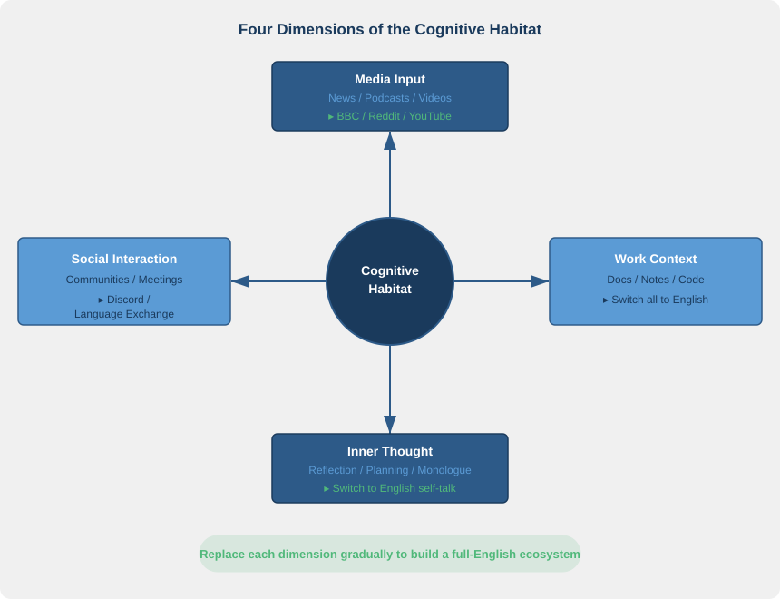

第八章：活在语言里
Living Inside the Language
"Language is not something you learn; it is something you live." — Claire Kramsch
核心问题：如何在日常生活中构建英文认知栖息地，让学习从刻意练习变成自然生长？
8.1 开篇
五年前我做了一个决定：把自己的信息环境全面切换为英文。手机系统改为 English，社交媒体取关所有中文账号，只关注英文技术博主和新闻源。技术文档只看英文原版，通勤听英文播客，睡前看英文小说。每天花四十分钟浏览 Reddit 和 Hacker News。
我没有报培训班，没有背过单词 APP，没有做过一套模拟题。
回头看，我不觉得自己在"学英语"。我只是把一部分生活搬进了英文里。五年下来，英文在我脑中从"需要翻译的外语"变成了"第二操作系统"，不需要启动，不需要切换，自动在后台运行。
这不是天赋异禀的个例。语言能力不是在课堂上"学"出来的，而是在日常环境中"长"出来的。怎么"长"？靠的是你每天住在什么语言里。
8.2 认知栖息地：一个比喻和一个原理
生物学中有一个基本事实：物种的能力由栖息地塑造。北极熊的白色皮毛不是"学"来的，而是长期生活在冰雪环境中被自然选择雕刻出来的。把它放到热带雨林，一切优势都会消失。
语言习得遵循同样的逻辑。你的大脑每天"住"在什么语言里，就会长出什么语言的能力。我把这个概念叫作认知栖息地（Cognitive Habitat），指你日常认知活动所使用的语言总和构成的"环境"。阅读新闻用什么语言？刷社交媒体用什么语言？写笔记用什么语言？脑中自言自语用什么语言？这些加在一起，就是你大脑的栖息地。
大多数中国英语学习者的栖息地长这样：一天清醒的 16 个小时里，15 小时住在中文里，1 小时在英语课上做客。然后困惑于英语为什么总也学不好。这就像每天在沙漠里待 15 小时、在温室里待 1 小时，然后抱怨花为什么不开。
Atkinson（2002）提出的社会认知方法（Sociocognitive Approach）从理论上解释了这个现象。他认为语言习得不只是大脑内部的计算过程，而是人与环境持续交互的产物。学习者的认知、身体和社会环境三者构成一个不可分割的系统。语言不是被"装进"大脑的，而是在大脑与环境的反复互动中"涌现"（emerge）出来的。
实践层面的推论很直接：你不需要出国，你需要的是重构你的信息输入环境。 在信息时代，手中的手机和电脑就是通往英文世界的大门。物理上你坐在上海的出租屋里，但你的认知栖息地可以在纽约、伦敦、硅谷，只要你的信息流是英文的。
Lave 和 Wenger（1991）的情境学习理论（Situated Learning）进一步强化了这个观点。他们发现，学习不是"获取知识"然后"应用知识"的两步过程，而是在真实情境中通过参与（participation）自然发生的。你不是先学会英语然后去用，而是在使用中学会。
认知栖息地由四个维度构成：媒体、社交、工作、思考。每个维度都可以独立"切换"。你不需要一夜之间全面改造，但每切换一个维度，英文通路的激活面积就扩大一块。
8.3 微沉浸策略：不出国的沉浸式学习
传统观念认为，沉浸式学习（Immersion）意味着出国。但在互联网时代，沉浸的本质不是"人在哪里"，而是"信息从哪里来"。微沉浸（Micro-Immersion）的核心思想是：在日常生活中创造大量微小的英文接触点，每个只有几分钟，但加起来形成持续的英文暴露。关键原则：不增加额外时间，只把你本来就要做的事切换成英文。
一、信息输入（每天 60–120 分钟，无需额外时间）
把日常信息源切换为英文。新闻从今日头条换成 BBC、Reuters 或 NYT。技术文档读英文原版，不读中文翻译。社交媒体关注英文账号，比如 Twitter/X、Reddit、Hacker News。原则不是"额外阅读英文"，而是"把你本来就要读的东西改成英文版"。
你关心什么就读什么领域的英文内容：科技、金融、体育、美食，什么都行。当英文变成获取信息的管道而非学习的对象时，"意↔英文"的直连通路在你不知不觉中被激活。
二、音频环境（每天 30–60 分钟，利用通勤和家务时间）
通勤时把中文播客换成英文播客。选你真正感兴趣的话题，不要选"英语教学类"播客，选技术、商业、心理学、历史。做家务和运动时播放英文内容，即使不全神贯注，也让耳朵习惯英文的语音流、韵律和节奏。
Kramsch（1993）强调，语言不只是词汇和语法的集合，更是承载文化语境的声音流。持续沉浸在英文声音中，你吸收的不仅是语言信息，还有语言背后的节奏感和文化直觉。
三、视觉环境
把手机和电脑的系统语言切换为 English。每次解锁屏幕、打开设置、收到通知，你都在进行一次微小但真实的英文接触。便签和备忘录用英文写，购物清单用英文记。
这些改变几乎不需要认知成本，但价值在于"持续性"。英文不再是某个特定时段的活动，而是弥漫在一整天视觉环境中的底色。
四、社交互动
加入英文线上社群：Reddit 兴趣版块、Discord 技术频道、Stack Overflow。找一个语言交换伙伴（Language Exchange Partner），每周语音聊天一次。参加英文 Webinar 和线上会议。
社交互动的独特价值在于即时性和不可预测性。你无法提前准备对方会说什么，大脑被迫实时用英文接收和回应。这对直连通路的锻造效率远高于任何单向输入。
五、工作场景
技术文档读英文原版。代码注释和 commit message 用英文写。工作笔记用英文记录，哪怕同事不看。会议纪要先写英文版，需要时再翻译成中文。
成本很低，你本来就要做这些事，只是换了语言载体。但它们把英文从"学习时段的事"变成了"工作日常的事"，这是认知栖息地迁移的关键一步。
六、内心独白（最高阶的微沉浸）
你脑中有一个永不停歇的声音，排队时、等电梯时、走路时、发呆时都在运转。这个声音用什么语言，决定了你认知栖息地最深处住的是谁。试着让它说英文。从简单的开始："What should I have for lunch?" "I need to finish this report by Friday." "The weather is getting warmer."
刚开始会极不自然。大脑像冷启动的柴油机，咳嗽几下就熄火了。没关系。每天能有几分钟内心独白切换到英文，就是一次对"意↔英文"直连通路最深层的激活。因为思考是最私密的认知活动，当英文进入这个空间时，它就不再是"外语"了。
8.4 复利效应：为什么每天 30 分钟比周末突击 5 小时更有效
1885 年，德国心理学家 Ebbinghaus 发表了著名的遗忘曲线（Forgetting Curve）研究。他发现新学的信息在最初几小时内遗忘最快，随后逐渐减缓。但如果在遗忘发生之前进行复习，记忆保持率会显著提高。更关键的发现是：分散练习（Distributed Practice）的效果远优于集中练习（Massed Practice）。同样的总学习时间，分成多次短时学习比集中在一次长时学习，记忆保持率高出 50% 以上。
这直接解释了一个常见困惑：为什么每天 30 分钟英文接触比周末突击 5 小时更有效？
原因有三。第一，每次接触都重新激活神经通路。大脑中的突触连接遵循"用进废退"原则，频繁的低强度激活比偶尔的高强度冲击更利于长期强化。第二，间隔重复（Spaced Repetition）恰好利用了遗忘曲线的规律：在记忆即将衰减时再次接触，巩固效果最佳。第三，频繁接触有利于程序性知识（Procedural Knowledge）的建立。语言使用更接近骑自行车而非背公式，它需要的是自动化的神经回路，不是陈述性的规则记忆。
Dörnyei（2009）的二语动机自我系统（L2 Motivational Self System）提供了另一个视角。他发现长期动机的维持依赖于"理想二语自我"（Ideal L2 Self）的愿景，也就是你想象中那个能用英文自如思考和表达的自己。每天 30 分钟的英文接触不只是在练语言，更是在反复"靠近"那个理想自我，让愿景保持鲜活。而周末突击完之后五天不碰英文，那个愿景就会逐渐模糊，动力随之消退。
做一个简单的算术。每天 30 分钟有效英文输入，一年是 182 小时。按每天清醒 16 小时计算，这相当于在纯英文环境中生活 11.4 天，将近两周。如果通过微沉浸策略把每天有效英文时间提高到 2 小时，一年就是 730 小时，相当于在英语国家生活 45 天，一个半月。这还没考虑复利效应：随着通路变强，同样 2 小时能有效加工的信息量会持续增加。
关键认知转变：不是"挤时间学英语"，而是"用英文替代你本来就要做的事"。时间成本为零，英文暴露量却可以从每天 0 分钟跃升到 2–3 小时。
8.5 从"学英语"到"用英语学"
方法之上，还有一个更根本的东西需要改变：范式。
大多数人对英语的心理定位是"学习对象"：需要攻克的课程、需要通过的考试、需要达标的技能。在这个范式下，你和英语的关系是"学生对科目"。你"上"英语课，你"做"英语题，你"练"英语口语。英语始终在你的对面，是一个需要征服的客体。
范式转换的核心：把英语从"学习对象"变成"学习工具"。不是 Learning English，而是 Learning through English。用英语学编程、用英语学心理学、用英语了解世界新闻、用英语研究你感兴趣的一切。
当这个转换发生时，英语从"对面"移到了"手里"。你不再意识到自己在"学英语"，你只是在获取知识、完成工作、表达想法，恰好用的是英文。这正是母语者的状态：没有人觉得自己在"用中文"，你只是在生活。当英文也达到这种透明度时，"意↔英文"的直连通路就真正建成了。
Lave 和 Wenger（1991）把这种状态叫作合法的边缘参与（Legitimate Peripheral Participation）。他们研究了裁缝学徒、助产士学徒等群体，发现最有效的学习不是"先学理论再实践"，而是从第一天就参与真实实践，从边缘开始逐渐深入。语言习得同理：不是"先学好英语再去用"，而是"从现在就开始用英语做事，在做事中自然习得"。
怎么判断自己完成了这个转换？有一个简单的标志：某一天你突然意识到，"刚才那段思考，我是用英文想的。"你没有刻意切换，没有"启动英文模式"，它就自然发生了。那条直连通路，已经在静默中运作。
8.6 🔬 语言实验：24 小时英文栖息地挑战
选一天（最好是周末），做一次完整的认知栖息地切换实验。
准备工作： - 手机系统语言切换为 English - 新闻 APP 首页订阅改为英文源 - 播客 APP 队列换成英文节目 - 备忘录新建一页，标题写 "Day Log"
全天规则： - 只看英文新闻、英文视频、英文播客 - 社交媒体只浏览英文内容 - 购物清单、备忘录、待办事项用英文写 - 尽量用英文"想事情"，等电梯、走路、做饭时都试试
24 小时后回顾三个问题： 1. 什么时候觉得自然？什么时候觉得别扭？ 2. 哪些场景你已经可以用英文无缝切换？哪些还做不到？ 3. "别扭"的地方就是你的直连通路尚未建好的区域，这就是下一步的练习重点。
这个实验不是要你从此每天都这样。它的价值在于"诊断"：用一天极端体验，让你清楚看到自己认知栖息地地图上哪里是英文的"已开发区"，哪里是"待开发区"。然后从最容易的待开发区开始，一块一块地扩展。
8.7 总结与过渡
这一章的核心论点可以浓缩为一个公式：构建英文认知栖息地的关键是"替代"而非"添加"。不是在你已经满载的生活中额外塞入"学英语"的时间，而是用英文替代你本来用中文做的事（读新闻、听播客、写笔记、刷社交媒体、想事情）。微沉浸策略让这种替代渗透到日常的每一个缝隙。复利效应让时间成为你的盟友，每天的微小积累，经过持续的正反馈循环，终将汇聚成质变。
前八章画出了一幅完整的图景：从打破翻译的墙（第一章），到理解"意先于语言"（第二章），到建立直连通路（第三章），到文化骨架（第四章），到输入和输出策略（第五、六章），到中文的正确角色（第七章），再到日常生活中的环境营造（本章）。每一章是一块拼图，拼在一起构成了一套完整的认知框架。
最后一章，我们把视野拉远，讨论一个更深的问题：从"学英语的人"到"用英语思考的人"，这个身份转变意味着什么？它的终点在哪里？当你真正"活在语言里"之后，你会变成什么样的人？
参考文献
-
Atkinson, D. (2002). Toward a Sociocognitive Approach to Second Language Acquisition. The Modern Language Journal, 86(4), 525–545. DOI: 10.1111/1540-4781.00159 — 提出语言习得的社会认知方法，主张习得是学习者认知、身体与社会环境持续交互的涌现产物，而非纯粹的大脑内部计算。
-
Ebbinghaus, H. (1885/1913). Memory: A Contribution to Experimental Psychology. New York: Teachers College, Columbia University. — 遗忘曲线和分散练习效应的奠基之作，实证证明分散在多个时段的学习比集中突击学习的记忆保持率显著更高。
-
Dörnyei, Z. (2009). The L2 Motivational Self System. In Z. Dörnyei & E. Ushioda (Eds.), Motivation, Language Identity and the L2 Self (pp. 9–42). Bristol: Multilingual Matters. — 提出二语动机自我系统，将长期学习动力与"理想二语自我"的愿景联系起来，解释了持续学习行为的内在驱动机制。
-
Kramsch, C. (1993). Context and Culture in Language Teaching. Oxford: Oxford University Press. — 论证语言教学不可脱离文化语境，语言不只是交流工具更是文化实践的载体，沉浸式接触的价值在于同时吸收语言形式和文化意义。
-
Lave, J., & Wenger, E. (1991). Situated Learning: Legitimate Peripheral Participation. Cambridge: Cambridge University Press. DOI: 10.1017/CBO9780511815355 — 提出情境学习理论和合法边缘参与概念，论证最有效的学习发生在真实实践的参与过程中，而非脱离情境的知识传授。
-
Ellis, N. C. (2002). Frequency effects in language processing: A review with implications for theories of implicit and explicit language acquisition. Studies in Second Language Acquisition, 24(2), 143–188. DOI: 10.1017/S0272263102002024 — 系统综述语言加工中的频率效应，论证持续、高频的语言接触是隐性习得的核心驱动力。
Chapter 8: Living Inside the Language
"Language is not something you learn; it is something you live." — Claire Kramsch
Core question: How do you build an English cognitive habitat in everyday life so that learning shifts from deliberate practice to natural growth?
8.1 Opening
Five years ago I made a decision: switch my entire information environment to English. Phone system language, English. Unfollowed every Chinese account on social media; followed only English-speaking tech bloggers and news outlets. Technical docs, originals only, no translations. English podcasts on the commute. English novels before bed. Forty minutes a day browsing Reddit and Hacker News.
I didn't sign up for a course. Never used a vocabulary app. Never touched a practice test.
Looking back, I don't feel like I was "learning English." I simply moved part of my life into English. Over five years, English shifted in my mind from "a foreign language that needed translation" to "a second operating system," running in the background without startup, without switching, automatically.
This isn't a story of rare talent. Language ability isn't "learned" in classrooms. It grows in the environment of daily life. How does it grow? Through which language you live inside, every day.
8.2 Cognitive Habitat: A Metaphor and a Principle
In biology there's a basic fact: a species' abilities are shaped by its habitat. The polar bear's white fur wasn't "learned." It was carved over time by natural selection in an icy environment. Place the bear in a tropical rainforest and every advantage vanishes.
Language acquisition follows the same logic. Whatever language your brain "lives" in each day is the language whose abilities will grow. I call this concept cognitive habitat: the total "environment" formed by the language(s) you use for routine cognitive activity. What language do you read the news in? Scroll social media in? Take notes in? Talk to yourself in? Add these up, and you have the habitat your brain inhabits.
For most Chinese learners of English, the picture looks like this: in sixteen waking hours, fifteen are spent in Chinese, one hour visiting English class. Then they wonder why English never takes hold. That's like spending fifteen hours in the desert and one in a greenhouse each day, then asking why the flowers don't bloom.
Atkinson's (2002) sociocognitive approach provides theoretical support. He argues that second-language acquisition isn't merely an internal computational process but the ongoing product of interaction between person and environment. A learner's cognition, body, and social context form an inseparable system. Language isn't "installed" into the brain; it emerges through repeated interaction between brain and environment.
The practical implication is direct: you don't need to go abroad; you need to reconfigure your information input environment. In the information age, your phone and computer are the gates to the English-speaking world. Physically you may sit in a Shanghai flat, but your cognitive habitat can be in New York, London, or Silicon Valley, as long as your information flow is in English.
Lave and Wenger's (1991) situated learning theory reinforces this. They found that learning is not a two-step process of "acquire knowledge" then "apply it." It happens naturally through participation in real situations. You don't first learn English and then use it; you learn it by using it.

Cognitive habitat has four dimensions: media, social interaction, work, and thought. Each can be "switched" independently. You don't need to overhaul everything overnight, but every dimension you switch expands the area of English activation.
8.3 Micro-Immersion: Immersion Without Leaving Home
The conventional view says immersion means going abroad. In the internet age, though, immersion is defined not by where you are but by where your information comes from. The core idea of micro-immersion is to create many small English contact points throughout daily life, each lasting only minutes, but together forming sustained exposure. The key principle: don't add extra time; simply switch what you already do into English.
1. Information Input (60–120 minutes daily, no extra time)
Switch your everyday information sources to English. Swap domestic news for BBC, Reuters, or NYT. Read technical docs in the original, not translations. Follow English accounts on Twitter/X, Reddit, Hacker News. The principle isn't "read extra English" but "make what you already read English." Whatever you care about (tech, finance, sports, food), read it in English. When English becomes the channel for information rather than the object of study, the direct pathway between yì (pre-linguistic meaning-intention) and English quietly activates.
2. Audio Environment (30–60 minutes daily, using commute and chores)
Replace Chinese podcasts with English ones during your commute. Choose topics you genuinely care about. Skip "English-learning" podcasts; pick tech, business, psychology, history. Play English content while doing housework or exercising. Even without full attention, your ears grow accustomed to the flow, rhythm, and cadence of spoken English. Kramsch (1993) emphasizes that language isn't just vocabulary and grammar but sound embedded in cultural context. Sustained exposure to English sound absorbs not only linguistic information but the rhythm and cultural intuition behind it.
3. Visual Environment
Switch your phone and computer system language to English. Every time you unlock the screen, open settings, or receive a notification, you get a small but real touchpoint with English. Write sticky notes and memos in English. Make shopping lists in English. These changes cost almost no cognitive effort, but their value lies in continuity. English is no longer an activity for a specific time slot; it becomes the background that permeates your visual environment all day.
4. Social Interaction
Join English online communities: Reddit subreddits, Discord tech channels, Stack Overflow. Find a language exchange partner and schedule weekly voice chats. Attend English webinars and online meetings. Social interaction offers something unique: immediacy and unpredictability. You can't prepare in advance for what someone will say. Your brain is forced to receive and respond in English in real time, which is far more efficient for forging the direct pathway than any one-way input.
5. Work Context
Read technical documentation in the original English. Write code comments and commit messages in English. Keep work notes in English even if colleagues don't read them. Draft meeting minutes in English first; translate to Chinese only if needed. The cost is low: you already do these tasks; only the language changes. But they move English from "something for study time" to "something for daily work," a crucial step in shifting your cognitive habitat.
6. Inner Monologue: The Highest Level of Micro-Immersion
There's a voice that never stops, while queuing, waiting for the elevator, walking, daydreaming. The language of that voice determines who inhabits the deepest layer of your cognitive habitat. Try letting it speak in English. Start simple: "What should I have for lunch?" "I need to finish this report by Friday." "The weather's getting warmer."
At first it feels deeply unnatural. The brain coughs like a cold diesel engine and stalls. That's fine. A few minutes of inner monologue in English each day is the deepest activation of the "yì↔English" direct pathway. Because thought is the most private cognitive activity, when English enters that space, it ceases to be a "foreign language."
8.4 The Compound Effect: Why 30 Minutes Daily Beats 5 Hours on the Weekend
In 1885, German psychologist Ebbinghaus published his seminal work on the forgetting curve. He found that newly learned information is forgotten fastest in the first few hours, then more slowly over time. If rehearsal occurs before forgetting sets in, retention improves markedly. More importantly, distributed practice far outperforms massed practice. The same total study time, spread across multiple short sessions instead of one long binge, yields over 50% better retention.
This directly explains a common puzzle: why 30 minutes of daily English contact works better than five hours crammed into the weekend.
Three reasons. First, each contact reactivates neural pathways. Synaptic connections follow "use it or lose it"; frequent low-intensity activation strengthens long-term connections more effectively than occasional high-intensity bursts. Second, spaced repetition exploits the forgetting curve: contact just before memory fades produces the best consolidation. Third, frequent contact supports procedural knowledge. Language use is closer to riding a bicycle than memorizing formulas. It depends on automated neural circuits, not declarative rule-memory.
Dörnyei's (2009) L2 Motivational Self System adds another lens. Sustained motivation depends on a vision of the "Ideal L2 Self," the future you who thinks and expresses freely in English. Thirty minutes of daily contact doesn't just build skill; it repeatedly "approaches" that ideal self, keeping the vision alive. Cramming on the weekend and then avoiding English for five days lets the vision fade and motivation slip away.
Do the math. Thirty minutes of effective English input per day is 182 hours per year. With sixteen waking hours per day, that's 11.4 days in a pure English environment, nearly two weeks. If micro-immersion raises effective English time to two hours daily, you reach 730 hours a year, 45 days in an English-speaking country, or a month and a half. This doesn't yet account for compound effects: as the pathway strengthens, the same two hours can process more information over time.
The key mindset shift: not "squeezing in time to study English" but "using English to replace what you'd do anyway." Time cost is zero, while English exposure leaps from zero to two or three hours per day.
8.5 From "Learning English" to "Learning Through English"
Beyond methods, there's something more fundamental that needs to change: the paradigm.
Most people position English as a "learning object," a subject to conquer, an exam to pass, a skill to certify. In that paradigm, your relationship to English is "student to subject." You "take" English class, "do" English exercises, "practice" English conversation. English always sits across from you as an object to be conquered.
The paradigm shift: move English from "learning object" to "learning tool." Not Learning English, but Learning through English. Use English to learn programming, psychology, world news, everything you care about.
When this shift happens, English moves from "across from you" to "in your hand." You stop noticing you're "learning English." You're simply acquiring knowledge, doing work, expressing ideas, and English happens to be the medium. That's the native speaker's condition: nobody thinks "I'm using Chinese." You're just living. When English reaches that same transparency, the "yì↔English" direct pathway is truly established.
Lave and Wenger (1991) call this legitimate peripheral participation. Studying apprentices (tailors, midwives), they found that the most effective learning isn't "theory first, then practice" but participation in real practice from day one, moving gradually from the periphery inward. Language acquisition works the same way: not "master English first, then use it" but "start using English for real tasks now, and acquire it in the doing."
How do you know you've made this shift? A simple sign: one day you suddenly realize, "That thought just now, I had it in English." No deliberate switching, no "turning on English mode." It happened on its own. The direct pathway is already running in silence.
8.6 🔬 Language Experiment: The 24-Hour English Habitat Challenge
Pick one day (ideally a weekend) and do a full cognitive habitat switch.
Preparation: - Set phone system language to English - Replace news app homepage with English sources - Fill podcast queue with English programs - Create a new memo page titled "Day Log"
Rules for the day: - Read only English news, watch English video, listen to English podcasts - Browse only English content on social media - Write shopping lists, memos, and to-do items in English - Try to "think in English" whenever possible: waiting for the elevator, walking, cooking
After 24 hours, answer three questions: 1. When did it feel natural? When did it feel awkward? 2. In which situations could you switch to English seamlessly? Where couldn't you? 3. The "awkward" spots are where your direct pathway isn't yet built, and where to focus next.
This experiment isn't meant to be your new daily routine. Its value is diagnostic: one day of intensity reveals, on your cognitive habitat map, which areas are "developed" in English and which are "pending." Then start expanding from the easiest pending areas, one patch at a time.
8.7 Summary and Transition
This chapter's core argument distills into one formula: building an English cognitive habitat hinges on "replacement," not "addition." Don't cram "English study" into an already packed life. Replace what you'd otherwise do in Chinese (read news, listen to podcasts, take notes, scroll social media, think) with English. Micro-immersion lets that replacement seep into every crack of daily life. The compound effect makes time your ally: tiny daily increments, through ongoing positive feedback, eventually add up to qualitative change.
The first eight chapters form a coherent picture: breaking the wall of translation (Chapter 1), understanding "yì before language" (Chapter 2), building the direct pathway (Chapter 3), cultural scaffolding (Chapter 4), input and output strategies (Chapters 5 and 6), the proper role of Chinese (Chapter 7), and building the environment in everyday life (this chapter). Each chapter is a puzzle piece; together they make up a complete cognitive framework.
In the final chapter, we widen the lens to ask a deeper question: What does it mean to move from "someone who learns English" to "someone who thinks in English"? Where does that journey end? Or rather, once you truly "live inside the language," what kind of person do you become?
References
-
Atkinson, D. (2002). Toward a Sociocognitive Approach to Second Language Acquisition. The Modern Language Journal, 86(4), 525–545. DOI: 10.1111/1540-4781.00159 — Proposes the sociocognitive approach to language acquisition, arguing that learning is an emergent product of ongoing interaction among the learner's cognition, body, and social environment, rather than purely internal computation.
-
Ebbinghaus, H. (1885/1913). Memory: A Contribution to Experimental Psychology. New York: Teachers College, Columbia University. — Foundational work on the forgetting curve and the distributed-practice effect; empirically demonstrates that learning spread across multiple sessions yields substantially higher retention than massed cramming.
-
Dörnyei, Z. (2009). The L2 Motivational Self System. In Z. Dörnyei & E. Ushioda (Eds.), Motivation, Language Identity and the L2 Self (pp. 9–42). Bristol: Multilingual Matters. — Proposes the L2 Motivational Self System, linking long-term motivation to the vision of an "Ideal L2 Self" and explaining the internal drive behind sustained learning behavior.
-
Kramsch, C. (1993). Context and Culture in Language Teaching. Oxford: Oxford University Press. — Argues that language teaching cannot be divorced from cultural context; language is not only a communication tool but a carrier of cultural practice; immersive contact absorbs both linguistic form and cultural meaning.
-
Lave, J., & Wenger, E. (1991). Situated Learning: Legitimate Peripheral Participation. Cambridge: Cambridge University Press. DOI: 10.1017/CBO9780511815355 — Proposes situated learning theory and legitimate peripheral participation; the most effective learning occurs through participation in real practice rather than decontextualized knowledge transmission.
-
Ellis, N. C. (2002). Frequency effects in language processing: A review with implications for theories of implicit and explicit language acquisition. Studies in Second Language Acquisition, 24(2), 143–188. DOI: 10.1017/S0272263102002024 — Systematic review of frequency effects in language processing; argues that sustained, high-frequency contact is the core driver of implicit acquisition.